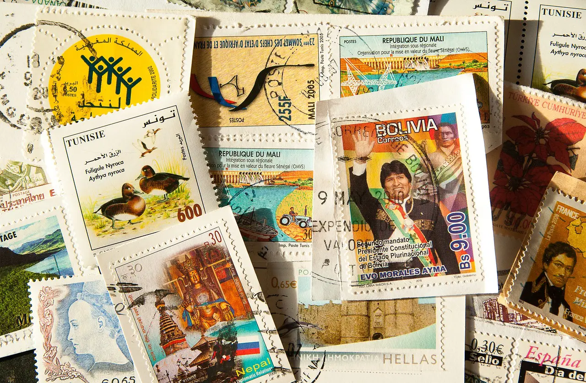

Tvätta frimärken

Om du har fått brev med frimärken på kanske du vill ta av dem och lägga till i din samling. Dra inte av dem direkt, då är det lätt att skada frimärket, istället bör du tvätta det. Nedan kommer en step-by-step tutorial på hur du tvättar frimärken:
- Häll upp en skål med ljummet vatten, inte alltför varmt men inte heller iskallt.
- Klipp av frimärkerna från brevet, inte längs kanterna utan med lite mellanrum runt frimärket (så att du inte behöver doppa hela kuveret) och lägg dem i skålen
- Vänta 10-15 minuter så att vattnet kan genomdränka limmet som finns på baksidan av frimärket
- Använd fingrarna eller en pincett för att försiktigt ta loss frimärket från pappret, om det inte lossnat ännu. Om det fortfarande inte lossnat kan du vänta i 5 minuter till och upprepa tills det lossar
Nu har du lyckats få loss frimärkerna från kuvertet, men frimärkena är ju fortfarande blöta. Därför måste du torka frimärkena, antingen genom att använda en tidning, eller en speciell torkbok, om du har tillgång till det.
- Sätt frimärkena upp och ner, alltså med den mönstrade sidan ner mot tidningen/torkboken. Vänta i någon timme tills de torkat.
Klart! Om du vill att dina frimärken ska vara jämnare och plattare kan du lägga några tunga böcker på dem när de torkar.